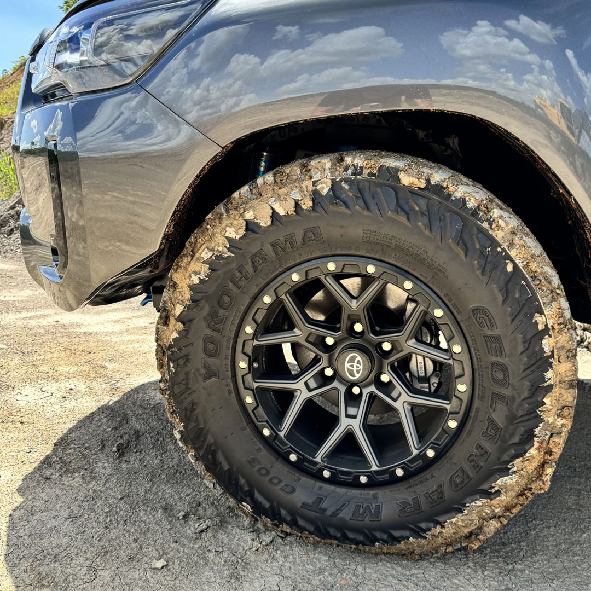
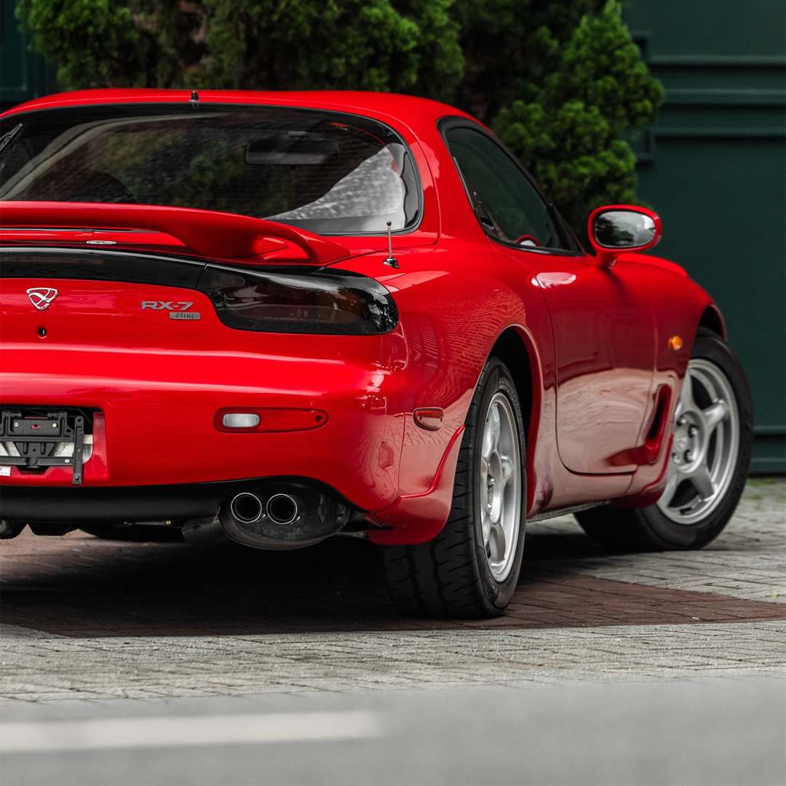
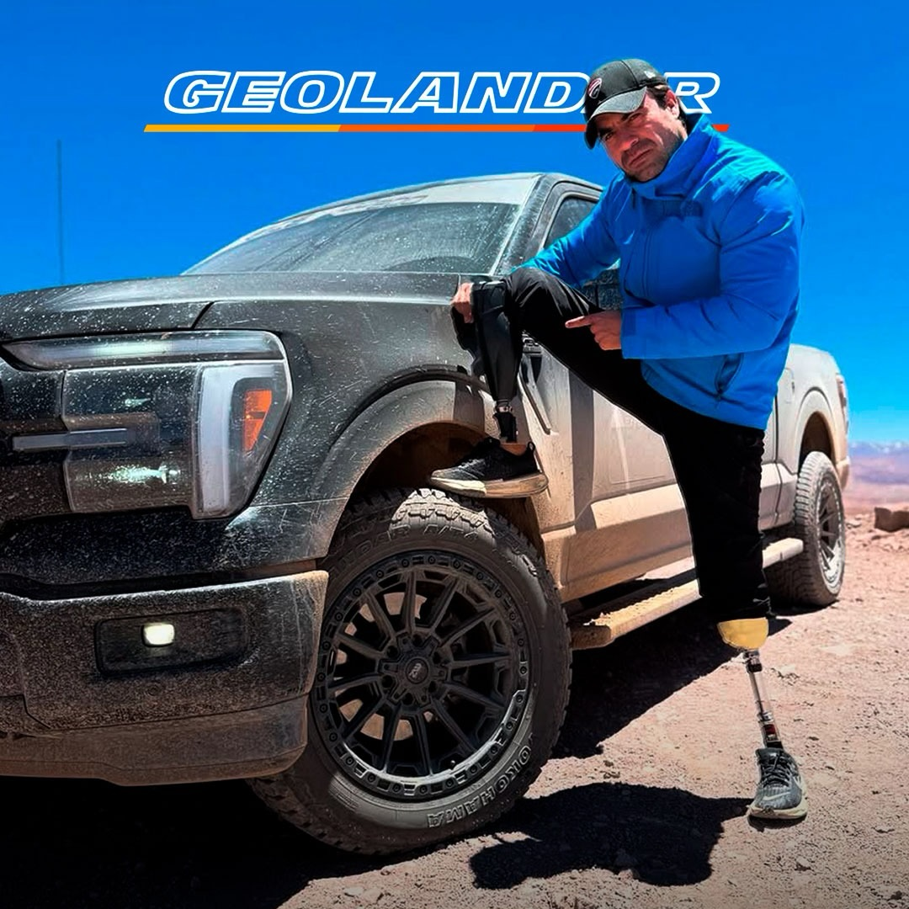
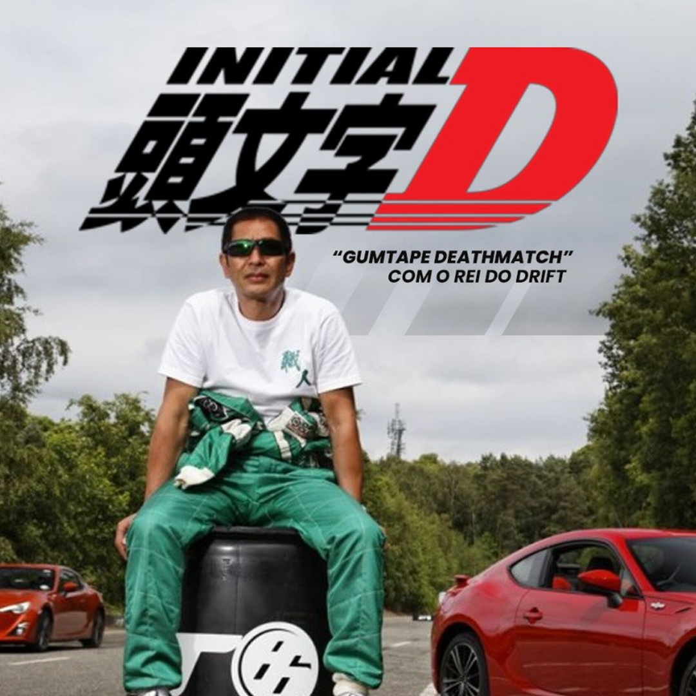
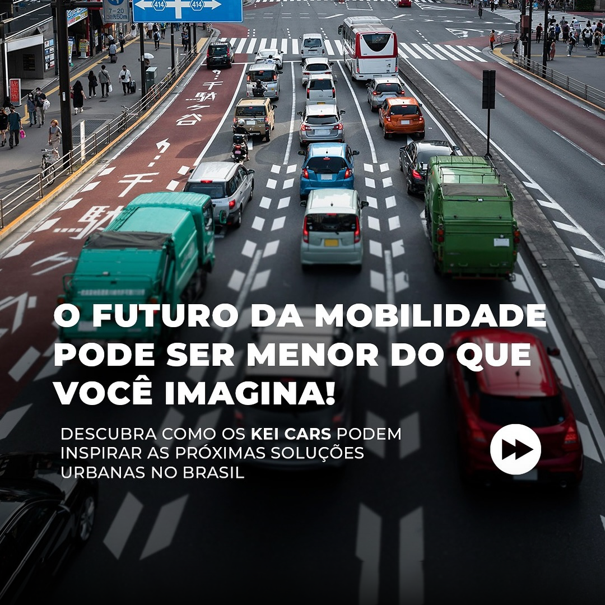
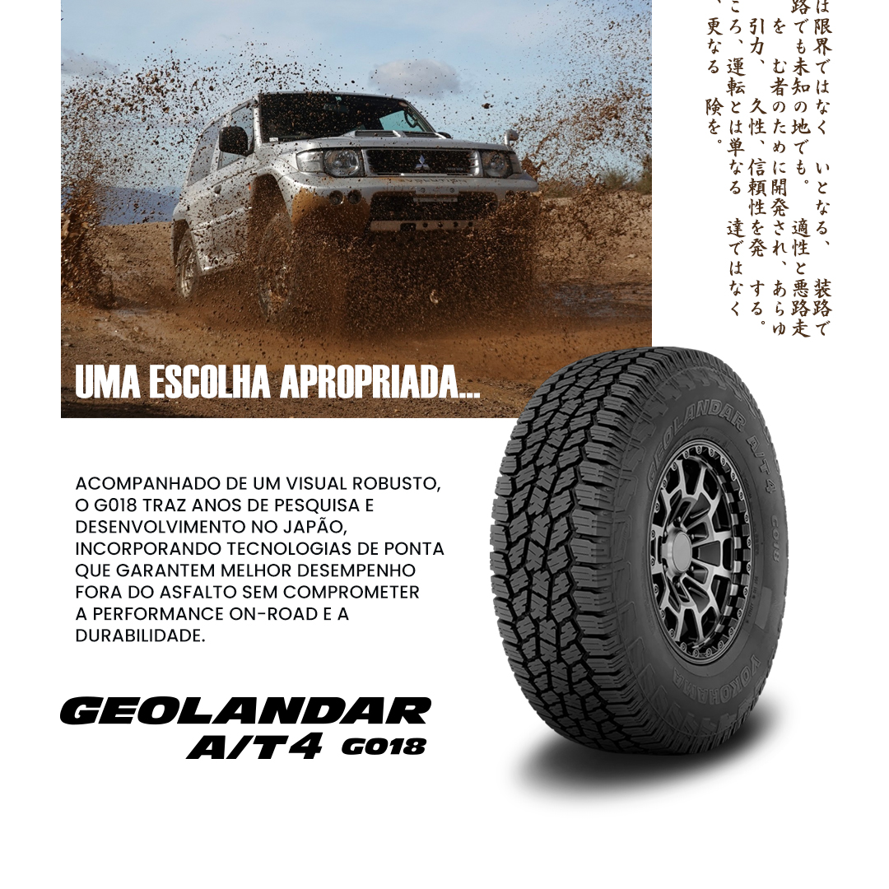
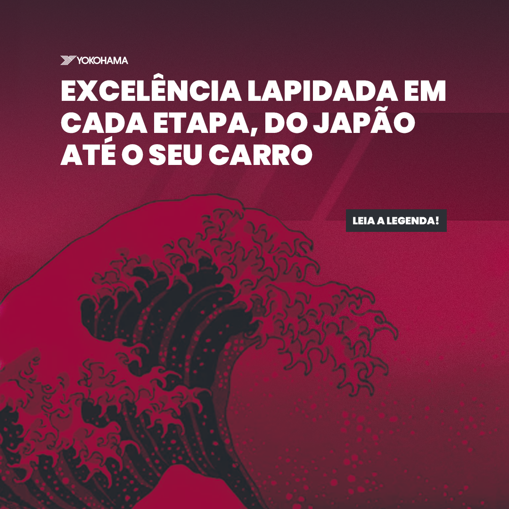
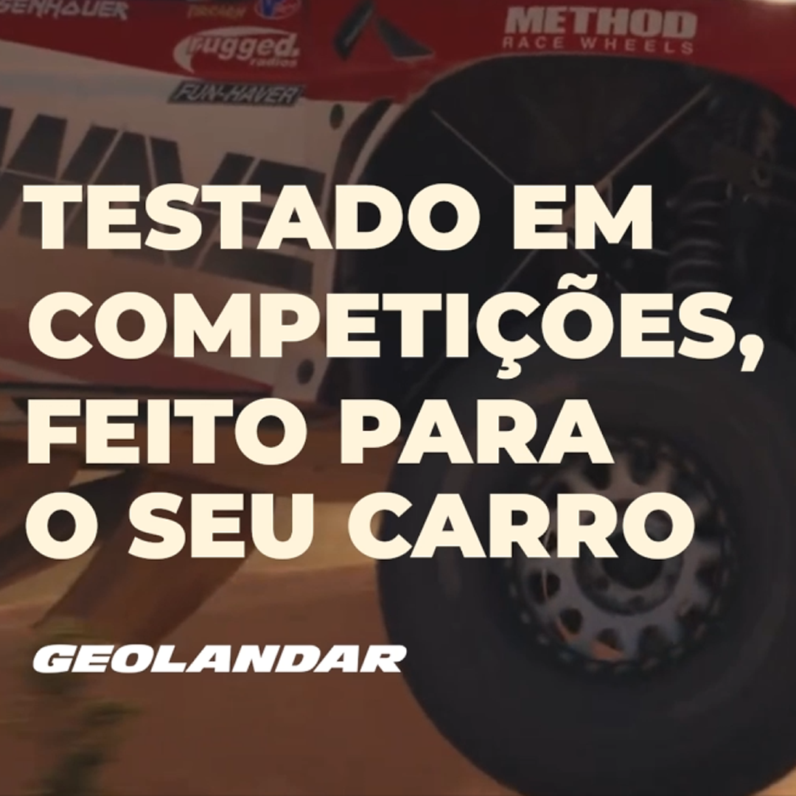

174K
Hilux Project BR
Cobrindo marketing, gestão de projetos e análise de dados, com responsabilidades em iniciativas de relacionamento, coordenando equipes de criação e entregando resultados mensuráveis.
Cobrindo marketing, gestão de projetos e análise de dados, com responsabilidades em iniciativas de relacionamento, coordenando equipes de criação e entregando resultados mensuráveis.
Crescimento sustentado e consistente, independente de pausas de mídia paga. Reflexo de estratégia, processo e execução em mídias sociais.
Sistema de BI estruturado do zero com módulos interativos, indo além das ferramentas nativas com modelos analíticos avançados vindos de instrumentos de finanças e gestão de projetos que informam decisões estratégicas de marketing e comerciais do grupo. Criação de filtros cruzados que permitem análises granulares em segundos, seja por influenciador, campanha, formato ou período específico, medindo o impacto de cada variável desde o briefing até o design e posicionamento.
Direção de criação e liderança em entrega de valor por meio da introdução de quadros proprietários com identidade, objetivos estratégicos, processo de produção estruturado e métricas de sucesso claras.








Conceitualização, planejamento de entregas e ativações entre criativos, tanto entre mídia paga, projetos de T.I e alinhamento B2B. Cada campanha foi tratada como projeto: escopo definido, stakeholders mapeados, orçamento gerenciado e KPIs acompanhados.
O DNA do automobilismo faz parte da identidade Yokohama, por isso tive um grande foco na coordenação de um ecossistema complexo de parceiros externos: desde influenciadores a equipes de competição, revendedores e fotógrafos, mantendo o alinhamento estratégico, responsabilização contínua, assim como a representação da marca em frente as categorias.
Gestão de múltiplos canais com alinhamento comercial contínuo, garantindo presença, consistência e relevância em cada ponto de contato da marca, do consumidor final ao revendedor.